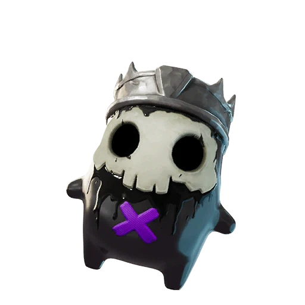

Fortnite Sprite · Epic
King Sprite Guide: Rarity, Ability, Variants, and Drop Rates
Boosts pickaxe damage. Find it, extract it, and track every King variant on the FORTNITE SPRITES TRACKER.

- Rarity
- Epic
- Ability
- Boosts pickaxe damage.
- Where to find
- Sprite Chests across the map.
- Summon cost
- 2700 Sprite Dust
- Variants
- 5 released
- Added
- v41.00
| Variant | Drop rate | Bonus | Status |
|---|---|---|---|
| King | 9.00% | Standard ability | Released |
| Gold King | 0.40% | 3× elimination XP | Released |
| Gummy King | 0.30% | +20% Sprite Dust | Released |
| Galaxy King | 0.16% | +30% ammo | Released |
| Holofoil King | 0.0600000% | Squad rare-find chance | Released |
Track your King Sprite collection — mark every variant you own.
Open the FORTNITE SPRITES TRACKER →What Is the King Sprite and How Rare Is It?
The King Sprite is an Epic-rarity collectible that arrived in the v41.00 patch, putting it among the original lineup of Sprites you can hunt across the island. As an Epic, the King Sprite sits comfortably above the Rare tier but below the Legendary and Mythic picks, which makes it a realistic mid-rarity target rather than a once-in-a-season miracle. The base Normal version drops at roughly 9%, so while you will not stumble onto one every match, a focused session of opening the right chests will usually turn one up.
That placement matters because it shapes how you should value the King Sprite in your wider collection. It is common enough to be a dependable building block for completionists, yet distinct enough that landing a clean variant still feels like a genuine score worth logging.
How to Find and Extract the King Sprite
The King Sprite spawns inside Sprite Chests scattered across the map, so the fastest route to one is simply prioritizing those chests over standard floor loot whenever you land. There is no summon cost tied to it, which means you do not need to bank any currency or pay a fee to coax it out; you find it in the wild, secure it, and carry it to extraction. Because it lives in Sprite Chests rather than a single named location, you have flexibility in where you drop, letting you weigh chest density against how contested a zone tends to be.
Once you have it in hand, the real objective is surviving long enough to extract. A Sprite only counts toward your collection after you successfully extract with it, so play the back half of the match a little more cautiously than usual when a fresh King Sprite is riding along.
The King Sprite Ability: Is It Worth Using?
The headline trait of the King Sprite is that it boosts pickaxe damage. That is a niche but genuinely useful effect: faster harvesting means you build mats quicker, and in close scrambles a stronger pickaxe can close out a downed opponent or break structures faster than usual. If your playstyle leans on aggressive building and constant material gathering, the King Sprite earns its slot without much debate.
So is it worth equipping over the alternatives? For pure combat utility it will not outshine Sprites that siphon health or replenish shields, but for builders, edit-heavy fighters, and anyone who values mobility and harvesting tempo, the pickaxe boost is a quiet quality-of-life upgrade you feel every rotation, and it pairs especially well with an early aggressive landing where mats and tempo decide the opening fights.
Every King Sprite Variant, Drop Rate, and Bonus
The King Sprite comes in several themed finishes, and each one stacks a different gameplay bonus on top of the base pickaxe ability. The Normal version is the standard finish at about 9% and carries no extra bonus beyond the core effect. The Gold King Sprite is far scarcer at roughly 0.4% and rewards you with 3x bonus Sprite XP from eliminations, making it the go-to chase for anyone leveling their collection aggressively.
The Gummy finish, sitting near 0.3%, grants +20% Sprite Dust on extraction, which is excellent if you are farming crafting resources. The Galaxy King Sprite is rarer still at about 0.16% and adds +30% more ammo on pickup, a subtle but real combat perk. Finally, the Holofoil King Sprite went live on July 9, 2026 at a 0.06% drop rate; it gives your squad a chance to find rare Sprites from containers. Tracking which of these five finishes you have claimed is exactly the kind of detail the FORTNITE SPRITES TRACKER is built to handle.
Tips and Strategy for Chasing the King Sprite
Because the base drop is a 9% Sprite Chest spawn, volume is your best friend: land in chest-dense areas, beeline for Sprite Chests, and rotate between named locations rather than overcommitting to one. The rarer Gold, Gummy, and Galaxy finishes drop at a fraction of a percent, so treat any of them as a bonus rather than a same-day goal, and never throw a winnable match just to fish for a recolor.
A smart habit is to bank the Normal King Sprite first to lock in your collection slot, then keep grinding for the premium variants over many sessions. Log every King Sprite pull as you go on the FORTNITE SPRITES TRACKER so you always know which variant is still missing — including the Holofoil, which has been obtainable since July 9, 2026. Ready to make progress? Track your full King Sprite collection on the checklist and watch those gaps close one extraction at a time.
Frequently asked questions
How rare is the King Sprite in Fortnite?
The King Sprite is an Epic-rarity Sprite. The base Normal version drops at about 9% from Sprite Chests, while the Gold, Gummy, and Galaxy variants are far rarer, ranging from roughly 0.4% down to 0.16%.
What does the King Sprite do?
It boosts your pickaxe damage, which speeds up harvesting and gives a small edge when breaking structures or finishing close fights. There is no summon cost, so you only need to find it in a Sprite Chest and extract.
What are all the King Sprite variants?
There are five finishes: Normal (no extra bonus), Gold (3x Sprite XP from eliminations), Gummy (+20% Sprite Dust on extraction), Galaxy (+30% ammo on pickup), and Holofoil (live since July 9, 2026), which gives your squad a chance to find rare Sprites from containers.